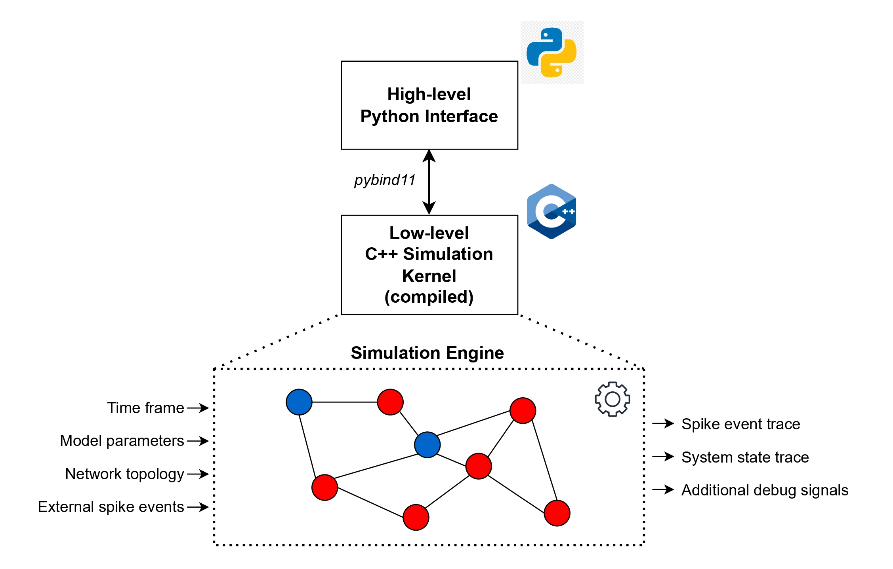
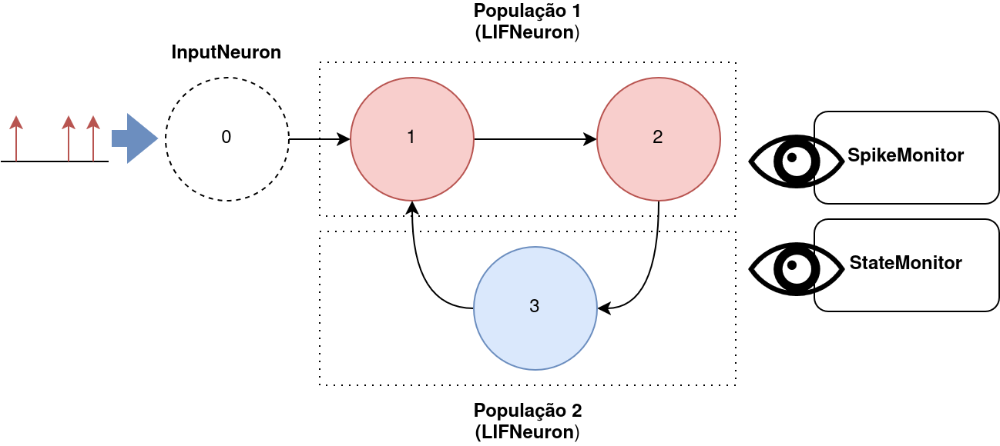
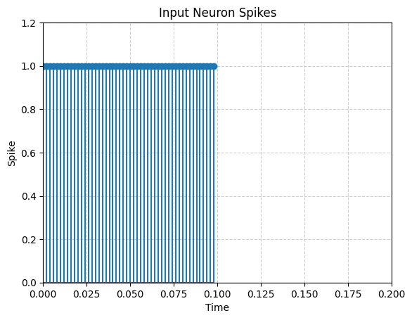
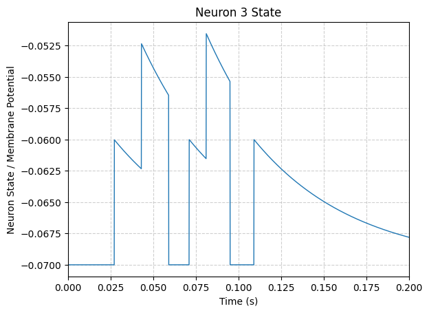
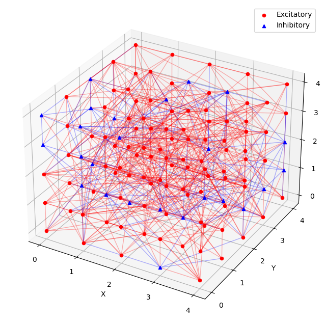
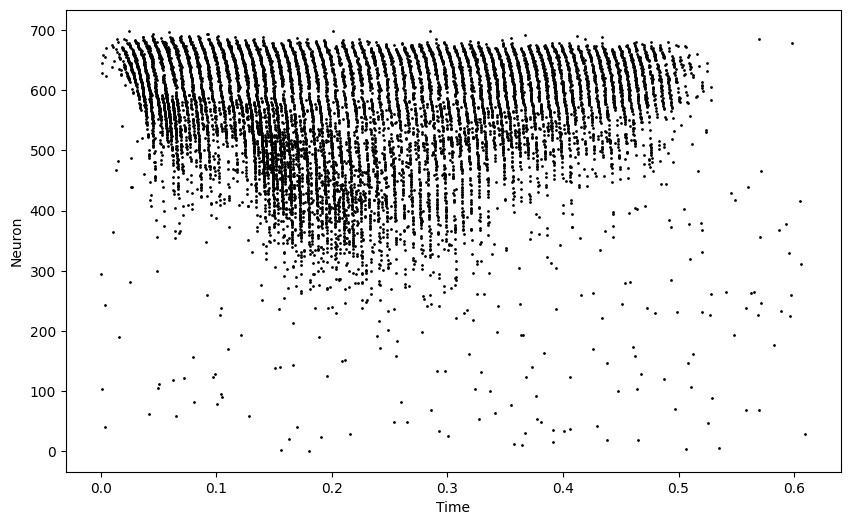

SNNBlaze é um simulador de redes neurais pulsadas, um paradigma de redes neurais que se inspira diretamente no funcionamento biológico do cérebro, que oferece uma modelagem realista e busca emular a eficiência computacional e energética do cérebro humano. Esta ferramente oferece uma implementação concisa e eficaz para a criação e simulação de redes compostas por neurônios do tipo Leaky Integrate-And-Fire, utilizando um modelo de simulação baseado em eventos para maximizar o desempenho.
Principais Funcionalidades
Definição de redes neurais
O simulador permite instanciar de qualquer rede que possa ser representada por um grafo, incluindo múltiplas populações de neurônio com características distintas.
Simulação eficiente
Núcleo de simulação, desenvolvido em C++, oferece um desempenho competitivo, alcançando tempos de simulação comparáveis aos simuladores mais eficientes da área, como Brian 2 e NEST
Interface intuitiva em Python
O simulador conta com uma API em Python, que simplifica a configuração e execução de simulações, também permitindo uma integração com outras ferramentas do ecossistema científico, como NumPy e scikit-learn.
Uma característica chave da implementação é a sua simplicidade: o paradigma de execução baseado em eventos oferece um nível competitivo de desempenho, mas também mantém a implementação do simulador concisa. Isso torna a ferramenta uma boa opção para sistemas embarcados, onde a memória disponível é limitada.
Além disso, é importante ressaltar que a execucão baseada em eventos permite que o simulador realize operações apenas quando um evento ocorre, reduzindo a carga computacional em comparação com um simulador baseado em tempo. A estrutura, assim como as entradas e saídas do simulador estão ilustradas na imagem abaixo:

O SNNBlaze é uma ferramenta de código aberto, disponível no GitHub, permitindo que pesquisadores e entusiastas explorem a implementação e contribuam para a sua expansão e aprimoramento.
Exemplo de Uso
Você pode visualizar uma demonstração do simulador ou um exemplo de código de uso abaixo.
Exemplo de código em Python:
# Initializing a network and monitors
example_net = pb.NeuralNetwork()
spike_monitor = pb.SpikeMonitor()
state_monitor = pb.StateMonitor(reading_interval=0.1e-3)
spike_monitor.reset_spikes()
lif_neuron1 = pb.LIFNeuron(tau_m=20e-3, C_m=1, v_rest=-70e-3, v_reset=-70e-3, v_thresh=-50e-3, refractory=2e-3)
lif_neuron2 = pb.LIFNeuron(tau_m=60e-3, C_m=2, v_rest=-70e-3, v_reset=-70e-3, v_thresh=-50e-3, refractory=2e-3)
inp_neuron = pb.InputNeuron()
# Adding neuron populations
example_net.add_neuron_population(2, lif_neuron1) # index 0,1
example_net.add_neuron_population(1, lif_neuron2) # index 2
example_net.add_neuron_population(1, inp_neuron) # index 3
# Adding synapses
synapses = [
pb.Synapse(3, 0, 10e-3, 10e-3),
pb.Synapse(0, 1, 15e-3, 10e-3),
pb.Synapse(1, 2, 20e-3, 10e-3),
pb.Synapse(2, 0, 10e-3, 10e-3),
]
for syn in synapses:
example_net.add_synapse(syn)
# Setting monitors
example_net.set_spike_monitor(spike_monitor)
example_net.set_state_monitor(state_monitor)
# Scheduling 20 spike events for input neuron
for i in range(50):
example_net.schedule_spike_event(0.002*i, 3, 20e-3)
print(f'Network size: {example_net.size()}')
# Running the network for 200 ms
example_net.run(0.2)
O código corresponde à rede ilustrada na imagem abaixo:

Os parâmetros definidos no código buscam se aproximar de valores medidos em neurônios reais. A imagem abaixo mostra um exemplo de entrada fornecida para a rede, assim como o estado e pulsos gerados pelo neurônio da população 3.


Aplicação a Aprendizado de Máquina
O simulador foi testado para a resolução de problemas de aprendizado de máquina. Isso é possível através da construção de uma "liquid state machine". A ideia central dessa estratégia é utilizar um conjunto fixo de neurônios interconectados (o reservatório) para transformar entradas temporais em representações de alta dimensão. As representações obtidas são então usadas para treinar um classificador simples, como nesse caso onde uma regressão logística é utilizada para problemas de classificação.
Dois datasets foram utilizados para avaliar o desempenho do simulador em tarefas de aprendizado de máquina: Spiking Heidelberg Digits e N-MNIST. Ambos são datasets compostos por padrões de pulsos, compatíveis com redes pulsadas.
Nesse estudo, um reservatório tridimensional inspirado na topologia de colunas corticais foi utilizado. Esse modelo é instanciado de maneira aleatória, com os parâmetros de geração sendo ajustado para controlar o comportamento global do sistema. Um exemplo de reservatório gerado pode ser visto na imagem abaixo:

Para mais detalhes sobre a arquitetura utilizada e os resultados obtidos, consulte a monografia associada ao projeto.
Spiking Heidelberg Digits (SHD)
Este dataset é composto por padrões de pulsos representando dígitos falados (0-9) em inglês e alemão. Cada padrão emula os sinais gerados pela cóclea humana em resposta ao estímulo acústico correspondente. O objetivo dessa tarefa é classificar corretamente os dígitos com base nesses padrões de pulsos.
A imagem abaixo ilustra um exemplo de padrão de pulsos do dataset SHD para o dígito 1 em inglês:

Ao realizar experimentos utilizando o SNNBlaze, foi possível obter uma acurácia de 77.52% nesta tarefa, demonstrando um bom nível de desempenho através do uso do simulador.
N-MNIST
Este dataset contém padrões de pulsos que representam dígitos escritos à mão (0-9). Esses padrões são gerados a partir da captura das imagens do dataset MNIST (imagens comuns de dígitos) por meio de uma câmera DVS (Dynamic Vision Sensor), resultando em uma representação baseada em pulsos. Nesta tarefa, a classificação deve ser realizada com base nesses padrões.
A imagem abaixo exemplifica um padrão de pulsos do dataset N-MNIST correspondente ao dígito 0 durante 150 ms. Os eventos são organizados em uma grade 2D e também possuem uma polaridade associada:
Ao tratar este problema com uma liquid state machine utilizando o SNNBlaze, foi obtida uma acurácia de 95,16%, demonstrando novamente um bom nível de desempenho no tratamento de tarefas de aprendizado de máquina.